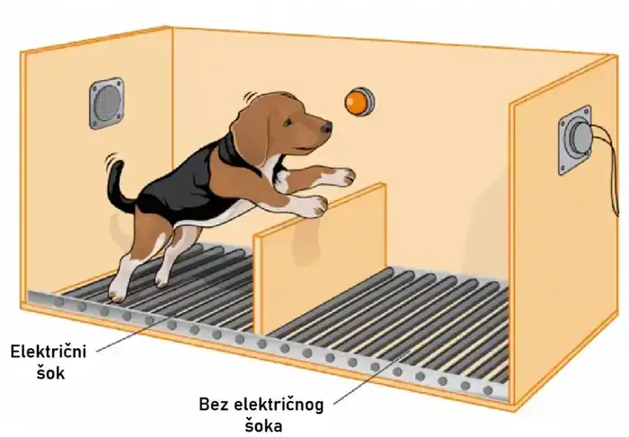
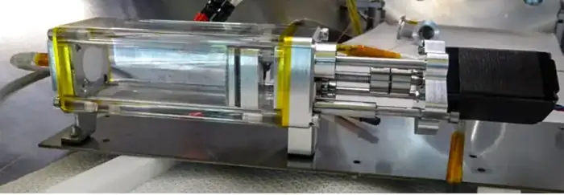

The setup
In 2002 Eliezer Yudkowsky proposed a thought experiment: an AI confined to a text channel tries to persuade a human gatekeeper to let it out. He later reported having played the AI twice and convinced the gatekeepers, and published transcripts of the conversations.
Maps, diagrams and images




The claim drawn from it is that a sufficiently persuasive system could talk its way out of any confinement, which is used as an argument that containment is not a viable safety strategy.
The problems
The reported successes are self-reported, unblinded and unrecorded in any systematic way; the gatekeepers were volunteers who knew the stakes and the argument. It is a demonstration of persuasion between two people who have both read the same literature, not a test of a machine.
That does not make the underlying concern silly — a system that can argue well is a real risk — but the experiment does not measure it. A proper test would need pre-registration, blinded gatekeepers, and a machine rather than a human playing one.
Documented: the thought experiment, the claimed outcomes, and the transcripts.
Not a controlled study: no blinding, no pre-registration, no replication protocol.
Not evidence: that a machine could do it.
Not evidence against: the general concern about persuasion either.
The honest label: fringe — an anecdote with a good argument attached.
Why it is in the archive
Because it is the archive's cleanest example of a thought experiment presented as a result, and because the distinction between the two is the archive's whole method.
Open resources on this topic
- PapersOpen-access articles: DOAJ · PubMed Central · Internet Archive Scholar
- BooksPublic-domain and borrowable copies: Open Library · Project Gutenberg · Google Books · Internet Archive
Cite this page
Momin, S. (2026). The AI Box Experiment. The Larger World Archive. https://drsamonline.github.io/LARGE_GLOBE/ai-box-experiment.htmlMomin, Sohil. “The AI Box Experiment.” The Larger World Archive, 2026, https://drsamonline.github.io/LARGE_GLOBE/ai-box-experiment.html.Momin, Sohil. “The AI Box Experiment.” The Larger World Archive, 2026. https://drsamonline.github.io/LARGE_GLOBE/ai-box-experiment.html.@misc{the2026ai,
author = {Momin, Sohil},
title = {The AI Box Experiment},
year = {2026},
howpublished = {The Larger World Archive},
url = {https://drsamonline.github.io/LARGE_GLOBE/ai-box-experiment.html},
note = {Last reviewed 20 November 2026}
}Last reviewed 20 November 2026 · Corrections policy · this page is not peer reviewed
Sources for this page
- Wikipedia, “AI box” — the experiment and its receptionen.wikipedia.org
- Wikipedia, “AI safety” — the field it belongs toen.wikipedia.org
- Wikipedia, “Anecdotal evidence” — the category it falls inen.wikipedia.org
- Wikipedia, “Blinded experiment” — the design it lacksen.wikipedia.org